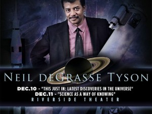
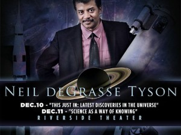

personales 3
Neil deGrasse Tyson (Nueva York, 5 de octubre de 1958) es un astrofísico, escritor y divulgador científico estadounidense. Actualmente es director del Planetario Hayden en el Centro Rose para la Tierra y el Espacio, investigador asociado en el Departamento de Astrofísica del Museo Americano de Historia Natural. Desde el año 2006 es el presentador del programa de televisión de corte educativo científico NOVA ScienceNOW del canal público de Boston WGBH, miembro de PBS, y que ha sido un invitado frecuente en The Daily Show, The Colbert Report, Real Time with Bill Maher y Jeopardy!.
La investigación de Tyson se ha enfocado en observaciones de formación y evolución estelar así como en cosmología y astronomía galáctica. Ha trabajado en numerosas instituciones, incluyendo la Universidad de Maryland, la Universidad de Princeton, el Museo Americano de Historia Natural y el Planetario Hayden. Ha escrito numerosos libros populares de astronomía. En 1995 comenzó a escribir la columna «Universo» para la revista Natural History. En una columna de esta revista, en 2002, acuñó el término «Manhattanhenge» para describir los dos días al año en los cuales el sol al atardecer se alinea con el cruce de las calles del trazado urbano de Manhattan, permitiendo que el sol se vea a lo largo de calles laterales sin obstrucciones. La columna de Tyson también influyó su trabajo como profesor, con las lecturas en The Great Courses.12 En 2001 el presidente George W. Bush lo designó para trabajar en la Commission on the Future of the United States Aerospace Industry (Comisión para el futuro de la industria aeroespacial de Estados Unidos) y en 2004 para trabajar en la President's Commission on Implementation of United States Space Exploration Policy (Comisión presidencial sobre la implementación de la política de exploración espacial de Estados Unidos), conocida como «Moon, Mars, and Beyond» (‘Luna, Marte y más allá’). Luego recibió el premio Medalla de la NASA al Servicio Público Distinguido, el mayor honor a civiles concedido por la NASA.13

 


<----- anterior
index (casa)